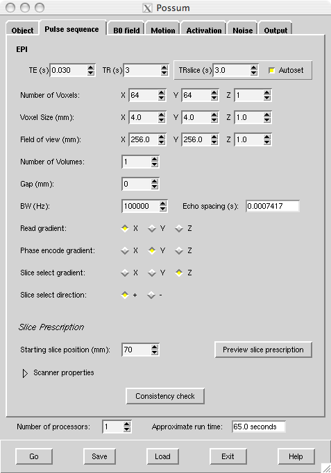
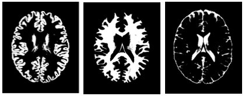
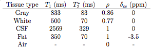
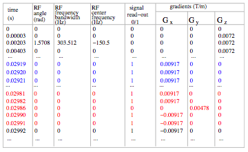
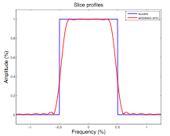
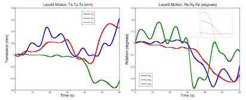
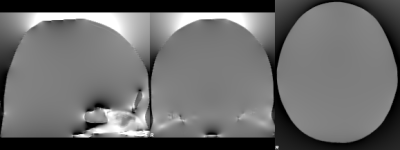
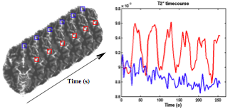

Contents
- Introduction
- User Guide
Running POSSUM is done in four main steps:
 1.Input: It is first necessary to create the input files. These files are: object, MR parameters, pulse sequence, slice profile, motion sequence, B0 field inhomogeneities, activation and noise. There is an example for each of these files in the folder $FSLDIR/data/possum. Note that the pulse sequence and the noise file are created within the POSSUM GUI. There is no need to create those in advance.
2.Run POSSUM: To run POSSUM, call the POSSUM GUI. This is done with a command Possum (or Possum_gui on a MAC), or run fsl and press the POSSUM button. After you have specified all of the input files in the GUI, press "GO". POSSUM GUI will create a POSSUM directory and save all the ouput there.
3. Output: You can, in addition to the main outputs in the POSSUM directory (MRI signal - raw data, not yet processed into a k-space or an image; and MRI image - magnitude and phase), generate a k-space or a complex version of the image. You can do this by the use of a command-line program signal2image.
4. Thermal noise: You can also add various levels of white (thermal) noise to the output (next to the one you already specified in the GUI). To do this use a command-line systemnoise.
For other information on POSSUM and updated journal references, see the POSSUM research web page. If you use POSSUM in your research, please quote the journal references listed there.
Input files
Object
 The input object is a 4D volume where the fourth dimension is a tissue-type. The object can be a segmented anatomical voxel model from any source (with ideally voxel sizes of 1x1x1mm). For example, if the object is a brain, then a segmented anatomical voxel model would be a collection of tissue templates: three-dimensional anatomical images of distinct tissue types (e.g. one template of grey matter, another of white matter and a third of cerebro-spinal fluid (CSF)). The image on the right shows cross-sections of the tissue templates derived from the anatomical images of grey matter, white matter and CSF (ordered from left to right). The voxel values in these templates reflect the proportion of tissue present in that voxel, in the range [0,1].
An excellent input object is provided with POSSUM ($FSLDIR/data/possum/brain.nii.gz). This is the BrainWeb digital brain phantom kindly provided by Alan Evans, Louis Collins et. al, McConnell Brain Imaging Centre, Montreal Neurological Institute, McGill University.
Alternatively, you can supply your own input object. The most common way to do this is to use a segmented T1 weighted structural image of the subject's brain (desirably 1x1x1mm size voxels). Each segmentation volume can then be used as a tissue class. By merging them together, the required 4D digital phantom is obtained. An example of how this process might look is:
bet structural structural_brain -f 0.5 -g 0
fast -t1 -c 3 -os -ob -od structural_brain struct_brain
fslmerge -t brain structural_brain_seg_1 structural_brain_seg_2 structural_brain_seg_0
Important note: The order of tissue types in the 4D object volume needs to match the order of MR parameters for different tissues in the MR parameters matrix. An example shown above places tissues in the order: grey, white, CSF. This matches the MR parameters matrix below: grey (first row), white (second row), CSF (third row).
MR parameters
 The MR parameters (relaxation times T1, T2*, spin density ρ, and chemical shift value δ) are specified using a text matrix. Some example matrices (for 1.5T and 3T scanners) with a set of parameter values for each of the tissue types are given with POSSUM: $FSLDIR/data/possum/MRpar_1.5T and $FSLDIR/data/possum/MRpar_3T. The values used in these example matrices were derived by McConnell Brain Imaging Centre and FMRIB centre respectively.
You can specify your own MR parameters matrix. You can make it either using MATLAB or emacs or any other text editor. The matrix should contain only numbers and should have 4 columns and be of the same format as in the image above. The units also need to be as the one specified in the image above. It should have as many rows as there are tissue types. Use the POSSUM example matrices to get a feeling of how this matrix should look like.
Important note: The order of tissue types in the 4D object volume needs to match the order of MR parameters for different tissues in the MR parameters matrix. An example shown in the Object section places tissues in the order: grey, white, CSF. This matches the MR parameters matrix shown in the image above: grey (first row), white (second row), CSF (third row).
Pulse sequence
 The pulse sequence is in a matrix form and defines RF angle, RF frequency bandwidth, RF center frequency, read-out times, and gradient waveforms (as seen in the image on the right). The best way to generate the pulse sequence is within the POSSUM GUI. All the pulse sequence parameters can be specified there. Default values are given to make things easier for you. There are six files POSSUM expects to find: pulse, pulse.info, pulse.readme, pulse.posx, pulse.posy, pulse.posz. All of these files are automatically generated by the GUI:
pulse is the pulse sequence matrix (in binary format). An easy way to view it is by using MATLAB functions read_pulse.m and write_pulse.m.
pulse.info is a text file which contains the information about the pulse sequence which is passed into the POSSUM program.
pulse.readme is the same kind of file as pulse.info, but easy to read and for the use of the user as a log file.
pulse.posx, pulse.posy and pulse.posz define a coordinate system of the input object.
If you want to generate a pulse sequence using a command-line and not the POSSUM GUI (not recommended) use the command-line pulse:
pulse
pulse -i object -o pulse [options]
Compulsory arguments (You MUST set one or more of):
-i,--inp 4D brain, resolution can be any.
-o,--out output name for the pulse sequence matrix
Optional arguments (You may optionally specify one or more of):
--seq default=epi (epi OR ge OR none)
--angle default=90 (flip angle in degrees)
--te default=0.03s (echo time TE)
--tr default=3s (repetition time TR)
--trslc default=0.12s (the time that takes for the acquisition of one slice)
--nx default=64 (resolution in x of the output image)
--ny default=64 (resolution in y of the output image)
--dx default=0.004m (image voxel x-dimension)
--dy default=0.004m (image voxel y-dimension)
--maxG default=0.055 T/m (maximum gradient strength)
--riset default=0.00022s (time it takes for the gradient to reach its max value)
--bw default=100000Hz (receiving bandwidth)
--numvol default=1 (number of volumes)
--numslc default=1 (number of slices)
--slcthk default=0.006m (slice thickness)
--gap default=0m (gap between the slices in m)
--zstart default=0m (the lowest position in the slice direction in m)
--slcdir default=z- (x+,x-, y+,y- or z+,or z- slice direction/orientation)
--phasedir default=y (x,y,or z phase encode direction)
--readdir default=x (x,y, or z read encode direction)
-v,--verbose switch on diagnostic messages
-h,--help display this message
-k,--kcoord default=no (saving k-space coordinates)
Slice profile
 Slice profile is a property of RF pulses. It describes the shape of the RF pulse in the frequency space. The shape is important as it defines the "amount" of excitation for the spins precessing at different frequencies. Ideally, this shape should be rectangular (blue line in the image). However that is never the case as the RF pulses are not infinite, and a realistic profile looks more like the red line.
An example of the slice profile is given with POSSUM: $FSLDIR/data/possum/slcprof. This slice profile was derived from the Varian 3T scanner in FMRIB. The file slcprof is given as a 2-column text matrix. The first column is the frequency and the second are the amplitude values which modify the RF flip angle. Both are normalised.
You can make your own slice profile. It is scanner dependent so you can ask your radiologist to help you make it. Once you make one, you can use it for all your simulations. Alternatively you can always use the one provided with the POSSUM.
Motion sequence
 The input motion sequence is defined in the simulator by an input file which specifies: time (s), Tx, Ty, Tz (characterising translations - in metres), Rx, Ry, Rz (characterising rotations about the center of the volume - in radians). Each of these parameters is one column of the 7 column text matrix. The rotations are specified using rotation angles often called pitch (rotation about the x-axis), roll (rotation about the y-axis) and yaw (rotation about the z-axis). All rotations are assumed to happen using the right hand rule, and in the order pitch-roll-yaw.
A few examples of the motion matrix are given with POSSUM:
$FSLDIR/data/possum/motionAllLarge_60s (shown in the image),
$FSLDIR/data/possum/motionInPlaneLarge_12s,
$FSLDIR/data/possum/motionRzLarge_0.12s,
$FSLDIR/data/possum/motionRzMed_60s.
You can easily make your motion file using either MATLAB or Emacs or any other editor. Note that the motion parameters can be specified at any time point. All you need to do is to specify the time in the first column. The motion values in between the two time points will be automatically interpolated within the POSSUM program.
Another way of making your own motion file is by using mcflirt to extract the file from your subject's FMRI data set. You should take into account that POSSUM motion file and mcflirt motion file are different regarding a few things: 1) .par file that mcflirt outputs is in reversed order to the possum motion file (first rotations and then translations); 2) mcflirt file does not have the time-column which you will need to add yourself (motion specified at each TR); 3) translation units of .par files are in millimeters and translation units of POSSUM files are in meters; 4) center of rotations for the mcflirt par file is the centre of gravity of the image, whereas for the matrix files it is in the bottom left corner of the object, while for the POSSUM motion file it is in the center of the object. All of these changes can easily be done in MATLAB (the conversion scripts will be part of a future FSL release).
Important note: The time length of the motion file (the time specified-in the last row of the matrix) should not exceed the time length of the pulse sequence (TR*NumVolumes).
B0 inhomogeneities
 B0 inhomogeneities occur at interfaces of materials with different magnetic susceptibilities, such as tissue-air interfaces. These differences lead to distortion in the local magnetic field, as Maxwell’s equations need to be satisfied (an example of the distorted field is shown in the image on the right).
No motion case
In POSSUM, when there is no motion, only one 3D image representing B0 inhomogeneities is needed (in Tesla or ppm). An example of this image is given with POSSUM. It is the first volume of the 4D volume $FSLDIR/data/possum/b0_ppm.nii.gz. Note that in the GUI you can either specify a 4D volume in which case the first volume will only be used, or you can just specify directly your 3D volume. The B0 inhomogeneity volume provided with POSSUM was made from the original CT map of the same subject as the POSSUM example object ( $FSLDIR/data/possum/brain.nii.gz). The values are in parts-per-million (ppm).
If you would like to make your own B0 inhomogeneity file, you can do it in two ways. The first way is if you have a good tissue/air segmentation, a 3D image with ones where there is tissue and zeros where there is air (the best one you can get is from a CT map). Once you have a tissue/air segmentation volume, you can run the command-line program b0calc:
b0calc -i tis_air_seg -o b0
The output volume of this program is in Teslas, and is generated for a field strength of 1T. In order to obtain B0 inhomogeneity file for any other magnetic field strength, just multiply the output of the b0calc with the desired field strength (e.g. with 3 if you need B0 inhomogeneities for the magnetic field of 3T). More information about the b0calc is set out below.
If you don't have a tissue/air segmented volume, you can use a field_map (2 complex images acquired with different echo times TE) and a structural image. These two images need to be of the same dimension and voxel size - the best is 1x1x1mm (if this is not the case you might need to register them). Then run the script:
generate_b0 structural field_map TEdiff
TEdiff is the difference between the two TE times. This script will generate the b0 inhomogeneities map for you. Always view the image before using it in the GUI to make sure it looks ok.
Motion case
If there is motion, POSSUM GUI requires the whole basis set consisting of nine 3D images: three (x-, y-, and z- projection) for each of the three main orientations of the B0 field (x-, y-, z- direction). An example of the B0 inhomogeneity basis set is given with POSSUM: $FSLDIR/data/possum/b0_ppm.nii.gz. This file is a 4D volume and each of the nine volumes represents one projection of one of the three basis vectors. This basis set was made from the original CT map of the same subject as the POSSUM example object ( $FSLDIR/data/possum/brain.nii.gz). The values in this basis set are in parts-per-million (ppm).
In order to calculate your own basis set you need to have a good tissue/air segmentation, a 3D image with ones where there is tissue and zeros where there is air (the best one is from a CT map). If you don't have one, you will have to improvise and possibly use the field_map to derive the air/tissue segmentation image. Once you have a tissue/air segmentation volume, run the following:
b0calc -i tis_air_seg -o b0x --b0x=1 --b0y=0 --b0=0 --xyz
b0calc -i tis_air_seg -o b0y --b0x=0 --b0y=1 --b0=0 --xyz
b0calc -i tis_air_seg -o b0z --b0x=0 --b0y=0 --b0=1 --xyz
The output of these command-lines will be nine volumes (values in Teslas). Once you generate them (note that it can take a few hours!) merge them into one 4D file. The order of the files needs to be as in the following example:
fslmerge -t b0 b0z_dz b0z_dy b0z_dx b0y_dz b0y_dy b0y_dx b0x_dz b0x_dy b0x_dx
as that is what the POSSUM GUI will expect to find. The basis set generated in this way is for the 1T magnetic field. In order to generate the basis set for any other magnetic field strength just multiply the whole 4D volume with the desired field strength.
The details of the command line program b0calc are:
b0calc
b0calc -i input -o output [options]
Compulsory arguments (You MUST set one or more of):
-i,--in filename of input image
-o,--out filename of B0 inhomogeneity output volume
Optional arguments (You may optionally specify one or more of):
--gx Value for zeroth-order x-gradient field (per mm): default=0
--gy Value for zeroth-order y-gradient field (per mm): default=0
--gz Value for zeroth-order z-gradient field (per mm): default=0
--b0x Value for zeroth-order b0 field (x-component): default=0
--b0y Value for zeroth-order b0 field (y-component): default=0
--b0 Value for zeroth-order b0 field (z-component): default=1
-d Delta value (chi_tissue - chi_air): default=-9.45e-6
--chi0 Value for susceptibility of air: default=+4e-7
--xyz calculate and save all 3 field components (i.e. x,y,z)
--extendboundary Relative proportion to extend voxels at boundary: default=1
--directconv use direct (image space) convolution, not FFT
-v,--verbose switch on diagnostic messages
-h,--help display this message
Activation
 Activation (BOLD signal) is defined in the simulator through the changes in the T2*. Each object voxel has its own time-series of T2* changes. These are user-defined and packed into massive four-dimensional volumes often called T2* maps. Instead of the 4D volumes it is also possible to define T2* maps with a 3D T2* map and an extra file providing the scaling parameter together with the time-points when the scaling parameter is applied.
An example of the 3D T2* map and a modulation time course are provided with POSSUM ($FSLDIR/data/possum/activation3D.nii.gz and $FSLDIR/data/possum/activation3Dtimecourse). They were derived by fitting the equation S = S0 exp(-TE/T2* ) to an experimentally acquired FMRI data set (from Montreal Neurological Institute, McGill University), where S is the measured signal intensity, TE is the echo time and S0 is the baseline intensity (determined from the average value of S under baseline conditions). The experiment that the data was generated from involved auditory naming with the paradigm consisting of six blocks ‘on’, and six blocks ‘off’. During ‘on’ blocks, subjects heard a description of an object and had to think of the name of the object.
You can make your own files by drawing areas of interest in fslview and then creating a modulation time-course file which matches your experimental paradigm. Another way of making the files is by using the already existing FMRI data to extract the T2* map as described above.
Running POSSUM
Call POSSUM GUI
To call the POSSUM GUI, type Possum in a terminal (type Possum_gui on Mac), or run fsl and press the POSSUM button.
Tab: Object
Now set the filename of the 4D input image (example in the GUI is $FSLDIR/data/possum/brain.nii.gz). You can view the image by pressing the Preview image tab (you will see an image of only one tissue type, e.g. grey in the case of the example given in the GUI).
Tab: Pulse sequence
Now choose the tab Pulse sequence. Default values are set already. TE is the echo time (in seconds), TR is the repetition time between the RF pulses (in seconds) and TRslice is the time it takes to generate a single slice (in seconds). TRslice is set with the Autoset to be TR divided with the number of slices (Number of Voxels: Z). You can choose to unset the Autoset and to specify your own TRslice.
You can then choose the number of your in-plane image voxels by setting X and Y values in Number of Voxels. The number of slices in your simulation is chosen by setting Z. By changing these values you will notice that the Approximate run time of POSSUM changes. This is because as you are increasing the number of points in your image matrix or increasing the number of slices the number of calculations the program needs to do increases, so the run time increases (or the other way around).
You can also change the size of your in-plane image voxels by setting the X and Y values in Voxel Size. The slice thickness is chosen by setting Z. As you are changing this you will notice that the values in the Field of View are changing. This is because the field of view is equal to the product of the number of voxels and the voxel size. Both voxel sizes and the field of view are in millimetres.
Now specify the Number of Volumes, the size of the Gap (in millimetres) between the slices and the read-out bandwidth BW. Echo spacing is showing the time it takes between the centres of two neighbouring k-space lines.
Now specify gradient directions for the Read gradient, Phase encode gradient, and the Slice select gradient. Direction of the acquisition during the slice selection is set by choosing an appropriate option from the Slice select direction. For scanning from the top to the bottom of the head choose "-" and for the scanning from the bottom to the top of the head choose "+" (this is when the slice selection gradient is Z). The images in both cases will be the same. The differences can occur in case the subject moves. The motion effects (including the spin history effects) if the subject is moving "along" the slice acquisition will be different from when the subject is moving "against" the slice acquisition.
Now specify which area of the brain you want to image by setting the Starting slice position. You can click on the Preview slice prescription in order to see the extent of your chosen field of view (FOV).
Finally, when you finish all of the pulse sequence specifications, you can check if everything is consistent within the pulse sequence by using the button Consistency check.
Tab: Bo field
Now choose the tab B0 field. You can choose between the 1.5T and 3T Field strength. Then you can choose the input file for the MR parameters (default examples are $FSLDIR/data/possum/MRpar_1.5T and $FSLDIR/data/possum/MRpar_3T).
Now choose if you want to have susceptibility induced B0 field inhomogeneities by selecting either "None" or "Custom file". If you choose the "Custom file", specify the base name for your B0 field inhomogeneities basis set (e.g. $FSLDIR/data/possum/b0_ppm_), and choose the appropriate Units for your files.
Tab: Motion Now choose the tab Motion. Press button where it says None and choose if you want to have no motion or to specify a custom file (e.g. $FSLDIR/data/possum/motionRzLarge_0.12s).
Tab: Activation Now choose the tab Activation. Press button where it says None and choose if you want to have no activation or to specify a custom file. When specifying the custom file, there are two files that need to be specified: T2* time course (e.g. $FSLDIR/data/possum/activation3Dtimecourse) and T2* spatial modulation (e.g. $FSLDIR/data/possum/activation3D.nii.gz). The second one can be viewed with the Preview image.
Tab: Noise
Now choose the tab Noise. Press button where it says None and choose if you want to have no noise or to have Thermal (white) noise. When specifying the white noise you can do so by either specifying the SNR or the absolute intensity of the noise (standard deviation).
Tab: Output
Now choose the tab Output and specify the name of the simulation directory. This directory will contain all of the input, log and output files.
If you have the SGE environment on your cluster (ask the IT officer about this) you can specify a number of processors POSSUM can run on. This will significantly reduce the time of running. If you do not have the SGE environment, the number of processors should be 1.
Run POSSUM Run
When POSSUM setup is complete press the Go button. The setup gets saved in a temporary POSSUM setup file. Then a script (called possumX) is run which uses the setup file and carries out all the simulation steps asked for, starting by creating a POSSUM results directory, and copying the setup file into here, named design.fsf (this setup file can be later loaded back into POSSUM using the Load button). You can create this file also by using the Save option.
Once the script has started running you can Exit the POSSUM GUI. The analysis will continue until completion. Your result at the end is called image_abs.nii.gz and you can see it by opening it in the fslview.
If you need to see these documentation files press the Help button.
POSSUM Output
POSSUM creates the directory you have specified as your output directory. If you have not specified the name, POSSUM will create a directory called "simdir" in your current directory. If the directory with the name you have specified already exists , a "-" is added after the name of the old directory. Of course, all the above gets ignored if you explicitly set the output directory name.
There are two main outputs of POSSUM in the POSSUM directory:
image_abs.nii.gz: Output image (magnitude). The image can be seen in the fslview. It is obtained from the signal (see below) after reordering it into the k-space and then reconstructing using the Discrete Fourier Transform (which can be done using a command-line program signal2image). This is already done for you within the GUI so there is no need to do it again. However, you can use signal2image yourself if you would like to get your image in a complex form, or would like to get the k-space.
signal: Binary 2-row matrix. The most important output of POSSUM. It takes the longest to generate. It represents a raw signal (k-space data) in a similar form as the MRI scanner ouput. The first row is the data from the real channel and the second row is the data from the imaginary channel. This matrix can be seen using a MATLAB command read_pulse.m.
signal2image
signal2image [options] -i signal -p pulse -o image
signal2image -p pulse -c kcoord
Compulsory arguments (You MUST set one or more of):
-p,--pulse pulse_sequence matrix (generated with the GUI)
Optional arguments (You may optionally specify one or more of):
-i,--in input signal (default name= signal)
-o,--out outputs image (default name = image)
-c, --kcoord kspace coordinates (default name = kcoord)
-k,--kout outputs k-space (default name = kspace)
-a,--abs save absolute magnitude and phase
-v,--verbose switch on diagnostic messages
-h,--help display this messageThe other outputs saved in the POSSUM directory are:
signal_nonoise the same as signal just without any white (thermal) noise.
image_phase.nii.gz output image (phase).
image_real.nii.gz output image (real part). Can be obtained with signal2image.
image_imag.nii.gz output image (imaginary part). Can be obtained with signal2image.
kspace_abs.nii.gz output kspace (magnitude). Can be obtained with signal2image.
kspace_phase.nii.gz output kspace (phase). Can be obtained with signal2image.
kspace_real.nii.gz output kspace (real part). Can be obtained with signal2image.
kspace_imag.nii.gz output kspace (imaginary part). Can be obtained with signal2image.
brain.nii.gz input object.
T2.nii.gz input 3D activation image.
T2timecourse input activation modulation file (in time).
b0A_dA.nii.gz input 3D B0 inhomogeneity basis set (A=x,y,z).
pulse pulse sequence matrix (binary).
pulse.info file with parameters of the pulse sequence (used by POSSUM programs).
pulse.readme file with parameters of the pulse sequence (user friendly).
pulse.posx coordinate system of the input object (x-coordinate).
pulse.posy coordinate system of the input object (y-coordinate).
pulse.posz coordinate system of the input object (z-coordinate).
pulse.com command used to generate the pulse sequence.
noise file describing the white (thermal) noise parameters with values of SNR and sigma used in the simulation (madde by the POSSUM GUI).
motion input motion file.
slcprof input slice profile.
MRpar input MR parameters.
possum.com commands used when running POSSUM (to generate signal).
possum.fsf POSSUM setup file, describing everything about the POSSUM setup. This can be loaded into the POSSUM GUI using the command "Load".
possum.log log file for everything that happened when you ran POSSUM GUI (except the generation of the signal which is in the logs directory).
logs log directory which contains log files from each of the processors that generates the signal. The commands used for this are in possum.com. Files with the extension ".o" are the log files showing the process, and the files with the extension ".e" are the log files showing if there are any errors. Note that this directory is empty when there is no SGE enviroment.
Adding white (thermal) noise
POSSUM GUI adds any noise you have specified before running POSSUM. However, if you want to add different levels of noise to the same simulation you should do that by using two easy and quick command-line programs.
Firstly, you should add thermal noise to your signal (or signal_nonoise if the signal is already generated with added thermal noise) by the use of a command-line program systemnoise. If you type systemnoise into your terminal you will get something similar to this:
systemnoise
systemnoise [options] --in=signal_nonoise --out=signal_with_noise --sigma=value
Compulsory arguments (You MUST set one or more of):
-i,--in input signal
-o,--out output signal
Optional arguments (You may optionally specify one or more of):
-s,--sigma set noise standard deviation (units of intensity)
--seed input seed value for the sequence
-v,--verbose switch on diagnostic messages
-h,--help display this messageNote that the output of this command-line should not be given the same name as the input because in that case you will lose your original signal file (which usually takes a long time to generate).
After you have added thermal noise to the signal, you can reconstruct the image using a command line program signal2image.
POSSUM Programs
Possum - the POSSUM GUI.
pulse - the POSSUM command-line program which the GUI calls when the setup has been completed and GO is pressed. It generates the pulse sequence.
possumX - the POSSUM script which the GUI calls when the setup has been completed and GO is pressed. It generates the image after the pulse sequence is generated.
generate_brain - the POSSUM script which can be used to generate the input object.
generate_b0 - the POSSUM script which can be used to generate the b0 inhomogeneity volume.
possum - the POSSUM command-line program which possumX calls to generate the signal (k-space data, see Possum Output).
systemnoise - the POSSUM command-line program which possumX calls to add the noise to the signal (see Adding noise).
signal2image - the POSSUM command-line program which possumX calls to convert the signal to the image (i.e. re-orders the signal into the k-space and then does the reconstruction). It can also just convert the signal into the k-space (i.e. just does the reordering without the reconstruction). See Possum Output.
b0calc - the POSSUM command-line program which you can use to generate the B0 inhomogeneity basis set. See Input files.
read_pulse.m - the POSSUM MATLAB program which you can use to view binary files in MATLAB.
write_pulse.m - the POSSUM MATLAB program which you can use to save files you made in MATLAB into the binary form needed sometimes for POSSUM.